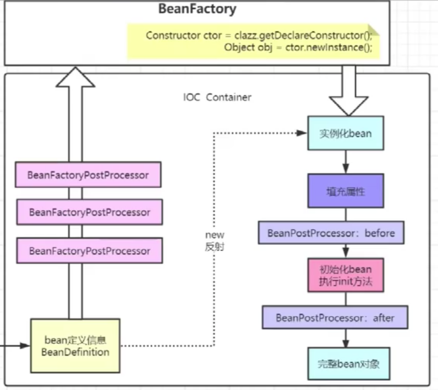

Spring笔记
spring: IOC容器
定义信息
xml配置的bean抽象到spring: BeanDefinition 读取BeanDefinition的类: BeanDefintionReader 容器的本质
Map<String, BeanDefinition> beanDefinitionMap = new ConcurrentHashMap<>();
Environment
为了方便使用，在容器创建的时候会提前将系统的相关属性加载到StandardEnvironment对象中，方便后续调用
实例化
在堆中开辟一块空间，属性都是默认值
实例化的方式有 - new - 反射
// 完全限定名方式
Class clazz = Class.forName("xxxxxxx");
// 通过对象
Class clazz = obj.getClass();
// 通过类
Class clazz = Obj.class;
Constructor constructor = clazz.getDecalaredConstructor();
Obj obj = constructor.newInstance();
初始化
给属性完成赋值操作
初始化分为两个操作 - 填充属性，就是赋值操作 - 调用具体的初始化方法
BeanFactory 用于创建Bean实例, 源码中有整个SpringBean声明周期的讲解 BeanFactoryPostProcessor 可以在BeanDefinition加载完成后，Bean实例化之前进行修改
例如org.springframework.beans.factory.config.PlaceholderConfigurerSupport
BeanPostProcessor bean初始化执行init前后执行

关键方法: org.springframework.context.support.AbstractApplicationContext#refresh
- 创建BeanFactory
DefaultListableBeanFactory - 调用BeanFactoryPostProcessor
- 注册BeanPostProcessor
- 国际化处理 i18n
- 开始实例化
// Instantiate all remaining (non-lazy-init) singletons.
finishBeanFactoryInitialization(beanFactory);
- 填充属性
- BeanPostProcessor: before
- init
- BeanPostProcessor: after
监听器, 观察者模式
FactoryBean用于扩展
源码入口org.springframework.context.support.AbstractApplicationContext#refresh